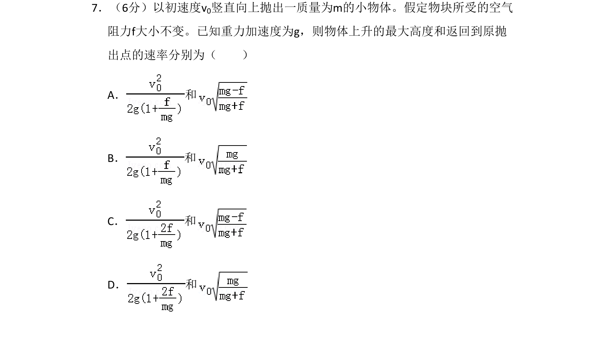
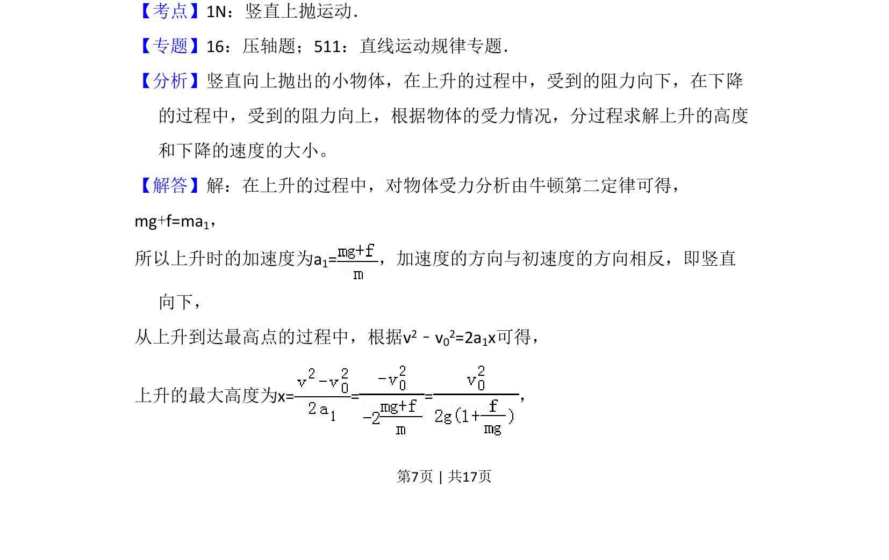
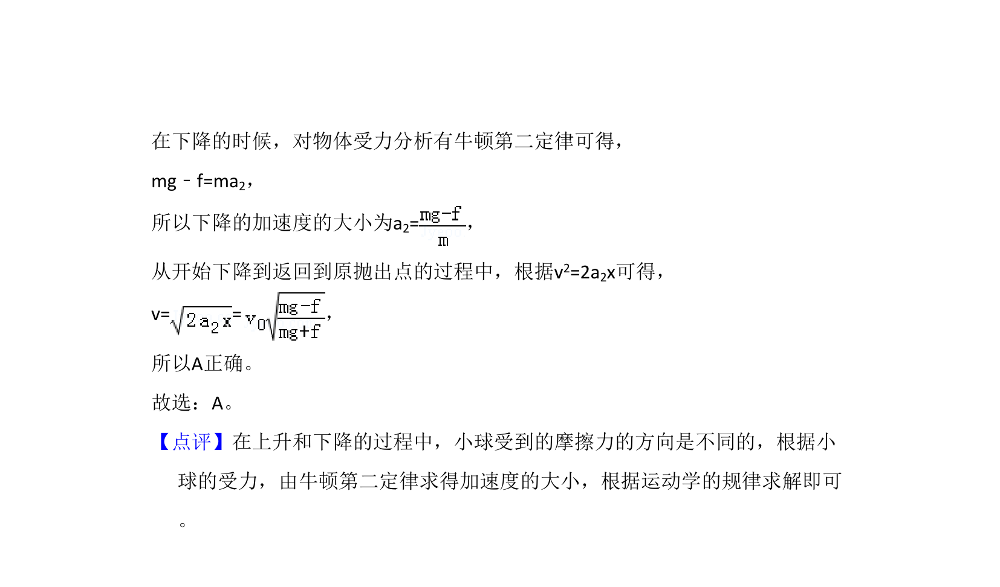

考点：竖直上抛运动 牛顿第二定律 匀变速直线运动 有阻力运动

竖直上抛运动中考虑空气阻力，求解物体上升最大高度和落回原处速率。


📄 原 PDF 第 7 页：
素材/真题/吉林/2008-2024·（吉林）物理高考真题/2009年高考物理试卷（全国卷Ⅱ）（解析卷）.pdf
7．（6分）以初速度v0竖直向上抛出一质量为m的小物体。假定物块所受的空气 阻力f大小不变。已知重力加速度为g，则物体上升的最大高度和返回到原抛 出点的速率分别为（ ） A． 和 B． 和 C． 和 D． 和
【考点】1N：竖直上抛运动．菁优网版权所有 【专题】16：压轴题；511：直线运动规律专题． 【分析】竖直向上抛出的小物体，在上升的过程中，受到的阻力向下，在下降 的过程中，受到的阻力向上，根据物体的受力情况，分过程求解上升的高度 和下降的速度的大小。 【解答】解：在上升的过程中，对物体受力分析由牛顿第二定律可得， mg+f=ma1， 所以上升时的加速度为a1=，加速度的方向与初速度的方向相反，即竖直 向下， 从上升到达最高点的过程中，根据v2﹣v02=2a1x可得， 上升的最大高度为x= = =，